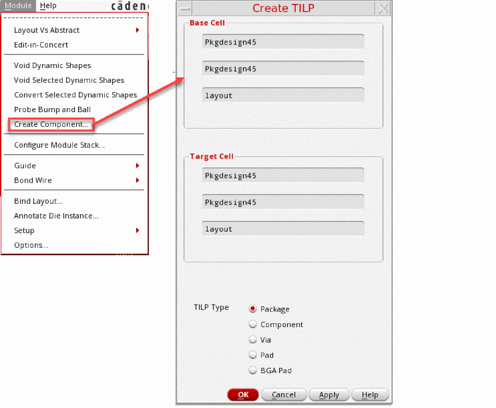

Creating TILPs
You can create padstack vias, surface-mounted devices (SMD) pads, embedded components, package TILPS, or die TILPs from a package layout by using the GUI option in the Virtuoso RF Solution. It instantiates the base cell that you want to use as the default footprint cell for the TILP. The base cellview of a component in the layout is created and thereafter, the corresponding TILP view is created by using the Module menu as shown in the following steps.
-
Click Module – Create Component to open the Create TILP form. If the TILP view already exists, it is overwritten.
 -
Place the resulting component in the package layout similar to a scenario when the component is being imported from Allegro.
Related Topic
Return to top